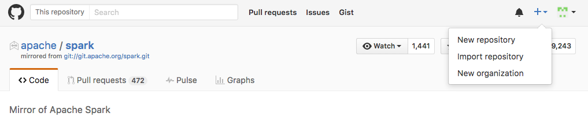

Publishing from CLI
Alright, now that we have made our ssh keys, let’s send our project to Github. The steps to this are
- Create an empty repository in Github (make sure you don’t initialize with a readme).
- Set the github repo as the remote (or remote repository) for the repo you created in The Command Line Interface (CLI).
So get on to github.com and make a new repository:

For “Repository name”, enter in the name of the folder you ran git
init in (if you’ve been following directions, it should be of the
format “<username>_CLI_REPO”). Your GitHub repository doesn’t have to
have the same name as your local repository, but it is much less
confusing. Feel free to enter a description if you like, and leave the
repo as public – you want people to be able to easily see your work!
DO NOT check the box next to “Initialize this repository with a README” –
as the instructions note, you already ran git init so you don’t
need to do this step.
Hit create repository. You’ll see a set of instructions. You’ll want to “Push an existing repository from Command Line”:
# Set the remote repo with "remote add"
# origin is what you will name the remote (a standard name)
git remote add origin git@github.com:<username>/<username>_CLI_REPO.git
# push the commits you have made *upstream* using -u
# to the master branch of origin (the remote you just set)
# master branch is the default branch of every repository
git push -u origin master
You will be asked if you want to continue connecting to Github -type
“yes”. Refresh your github repo page in chrome and Voila! You should see that the readme has been pushed to Github. You’ve now created a Git repository from the command line
and successfully connected it to GitHub!
Once your local repository has been connected to GitHub, you can not
only continue uploading your changes with the push command, you
can also download any changes others have made with the (aptly-named)
pull command:
At this point you now have all the tools you need to create, modify,
and collaborate with others using either the command line, a GUI, or
both! The world is truly your oyster.
 Git Foundations
1.0
Git Foundations
1.0